1.9 تستی
1.9.1 نیروی
روش 1.9 قانون 90
اگر بارها بر حسب \(\mu C\) و فاصله بر حسب \(cm\) بودند میتوانید از رابطه زیر استفاده کنید.
\[ \begin{aligned} F & = k \frac{|q_1||q_2|}{r^2} \\ & = 9 \times 10^{9} \frac{|q_1| \times 10^{-6} |q_2| \times10^{-6}}{r^2\times10^{-4}} \\ & = \boxed{90 \frac{|q_1||q_2|}{r^2}} \end{aligned} \]
مثال 1.23 فرض کنید دوبار مشابه \(Q\) در فاصله معینی نیروی \(F\) را به هم وارد میکنند. چند درصد از با یکی برداشته به دیگری اضافه کنیم تا در همان فاصله نیروی بین دوبار \(\frac{15}{16}F\) شود؟
- \(15\)
- \(16\)
- \(20\)
- \(25\)
نمایش پاسخ
\[ \require{cancel} \begin{aligned} \cfrac{F'}{F} & = \cfrac{q'_1}{q_1} \times \cfrac{q'_2}{q_2} \times (\cfrac{r}{r'})^2 \\ \cfrac{15}{16} & \overset{\underrightarrow{Q=1, r'=r}}{=} \cfrac{Q-x}{Q} \times \cfrac{Q+x}{Q} \\ \Rightarrow 15Q^2 & = 16Q^2 - 16x^2 \\ \Rightarrow 16x^2 & = Q^2 \\ \Rightarrow 4x & = Q \\ \Rightarrow x & = \cfrac{1}{4} Q = 25\%Q\\ \end{aligned} \]مثال 1.24 دو کره فلزی مشابه دارای بارهای الکتریکی \(q_1 = 5 \mu C\) و \(q_2 = 15 \mu C\) در فاصله \(r\) نیروی \(F\) را به یک دیگر وارد میکنند. اگر دو کره را به هم تماس داده و مجدد اگر همان فاصله قبلی قرار دهیم نیروی بین دو کره چند درصد تغییری میکند؟
- \(125\%\) افزایش
- \(25\%\) کاهش
- تقریبا \(33\%\) افزایش
- تقریبا \(33\%\) کاهش
نمایش پاسخ
\[ \require{cancel} \begin{aligned} \cancelto{\scriptsize +15}{q_1} & {\LARGE\bullet} \overset{\cancelto{1}{r}}{\leftarrow---\rightarrow}{\LARGE\bullet} \cancelto{\scriptsize +5}{q_2} & (1) \\ & \overset{q =\frac{15 + 5}{2}=10}{{\LARGE{\LARGE\bullet}}{\LARGE\bullet}} \\ \cancelto{\scriptsize +10}{q'_1} & {\LARGE\bullet} \overset{\cancelto{1}{r'=r}}{\leftarrow---\rightarrow}{\LARGE\bullet} \cancelto{\scriptsize +10}{q'_2} & (2) \end{aligned} \]
\[ \require{cancel} \begin{aligned} \cfrac{F'}{F} & \overset{(r=r')}{=} \cfrac{q_1'}{q_1} \times \cfrac{q_2'}{q_2}\\ & = \cfrac{\cancelto{2}{10}}{\cancel{5}} \times \cfrac{\cancelto{2}{10}}{\cancelto{3}{15}} \\ \Rightarrow F' & = \cfrac{4}{3} F \\ \Rightarrow \cfrac{\Delta F}{F} \% & = \cfrac{F' - F}{F} \times 100 \\ & = \cfrac{ \cancelto{ \cancelto{\frac{1}{3} \simeq 0.33}{(\frac{4}{3}-1)} \cancel{F} }{\frac{4}{3} F - F} }{\cancel{F}} \times 100 \\ & \simeq \boxed{+33\%} \end{aligned} \]مثال 1.25 دو بار هم اندازه و همنام در فاصله مشخصی از یکدیگر قرار دارند. اگر ده درصد یکی از بارها را کم کرده و به بار دیگری اضافه کنیم. اندازه نیرو متقابل بارها چگونه تغییر میکند؟
- \(1\%\) افزایش
- \(1\%\) کاهش
- \(19\%\) افزایش
- \(19\%\) کاهش
نمایش پاسخ
\[ \require{cancel} \begin{aligned} \cancelto{\scriptsize +1}{q_1} & {\LARGE\bullet} \overset{r}{\longleftarrow-----\longrightarrow}{\LARGE\bullet} \cancelto{\scriptsize +1}{q_2} \\ \cancelto{\scriptsize +1 - (+0.1) = 0.9}{q'_1} & {\LARGE\bullet} \overset{r'=r}{\longleftarrow-----\longrightarrow}{\LARGE\bullet} \cancelto{\scriptsize +1 + (+0.1) = 1.1}{q'_2} \end{aligned} \]
\[ \require{cancel} \begin{aligned} \cfrac{F'}{F} & \overset{(r=r')}{=} \cfrac{q_1'}{q_1} \times \cfrac{q_2'}{q_2}\\ & = \cfrac{0.9}{1} \times \cfrac{1.1}{1} \\ \Rightarrow F' & = 0.99 F \\ \Rightarrow \cfrac{\Delta F}{F} \%& = \cfrac{F' - F}{F} \times 100\\ & = \cfrac{ \cancelto{\cancelto{-0.01}{(0.99-1)}\cancel{F}}{0.99F - F} }{\cancel{F}} \times 100 \\ & = \boxed{- 1\%} \end{aligned} \]مثال 1.26 دو بار هم اندازه و ناهمنام در فاصله مشخصی از یکدیگر قرار دارند. اگر ده درصد یکی از بارها را کم کرده و به بار دیگری اضافه کنیم. اندازه نیرو متقابل بارها چگونه تغییر میکند؟
- \(1\%\) افزایش
- \(1\%\) کاهش
- \(19\%\) افزایش
- \(19\%\) کاهش
نمایش پاسخ
\[ \require{cancel} \begin{aligned} \cancelto{\scriptsize +1}{q_1} &{\LARGE\bullet} \overset{r}{\longleftarrow-----\longrightarrow}{\LARGE\circ} \cancelto{\scriptsize -1}{q_2} \\ \cancelto{\scriptsize +1 - (+0.1) = +0.9}{q'_1} &{\LARGE\bullet} \overset{r'=r}{\longleftarrow-----\longrightarrow}{\LARGE\circ} \cancelto{\scriptsize -1 + (+0.1) = -0.9}{q'_2} \end{aligned} \]
\[ \require{cancel} \begin{aligned} \cfrac{F'}{F} & \overset{(r=r')}{=} \cfrac{q_1'}{q_1} \times \cfrac{q_2'}{q_2} \\ & = \cfrac{0.9}{1} \times \cfrac{0.9}{1} \\ \Rightarrow F' & = 0.81 F \\ \Rightarrow \cfrac{\Delta F}{F} \%& = \cfrac{F' - F}{F} \times 100 \\ & = \cfrac{ \cancelto{\cancelto{-0.19}{(0.81-1)}\cancel{F}}{0.81F - F} }{\cancel{F}} \times 100 \\ & = \boxed{-19\%} \end{aligned} \]مثال 1.27 دو بار همنام \(q_1 = 12 \mu C\) و \(q_2\) در فاصله \(r\) به یکدیگر نیروی \(F\) وارد میکنند. اگر \(25%\) از بار \(q_1\) را برداشته و به بار \(q_2\) اضافه کنیم و همچنین فاصله بین دو بار را نصف کنیم نیروی بین کولنی بین آنها پنج برابر میشود بار \(q_2\) چند میکرو کولن است؟
- \(3\)
- \(4.5\)
- \(9\)
- \(12.5\)
نمایش پاسخ
\[ \require{cancel} \begin{aligned} \cancelto{\scriptsize 12}{q_1} & {\LARGE\bullet} \overset{\cancelto{1}{r}}{\longleftarrow----\longrightarrow}{\LARGE\bullet} \cancelto{\scriptsize q}{q_2} \\ \cancelto{\scriptsize q_1 - 25\%q_1 = 12 - \frac{1}{4} \times 12 = 9}{q'_1} & {\LARGE\bullet} \overset{\cancelto{\frac{1}{2}}{r'=\frac{r}{2}}}{\leftarrow-\rightarrow} {\LARGE\bullet} \cancelto{\scriptsize q_2 + 25\%q_1 = q + \frac{1}{4} \times 12 = q + 3}{q'_2} \end{aligned} \]
\[ \require{cancel} \begin{aligned} \cfrac{F'}{F} & = \cfrac{q'_1}{q_1} \times \cfrac{q'_2}{q_2} \times (\cfrac{r}{r'})^2 \\ 5 & = \cancelto{\frac{3}{\bcancel{4}}}{\cfrac{9}{12}} \times \cfrac{q+3}{q} \times \cancelto{\bcancel{4}}{(\cfrac{1}{\frac{1}{2}})^2} \\ \Rightarrow 5q & = 3q + 9 \\ \Rightarrow 2q & = 9 \\ \Rightarrow q & = \boxed{4.5} \end{aligned} \]مثال 1.28 برآیند وارد بر \(q_2\) چند نیوتن است؟
\[ \overset{q_1 = -4 \mu C}{{\LARGE\bullet}} \underset{6cm}{------} \overset{q_2 = 2 \mu C}{{\LARGE\bullet}} \underset{3cm}{---} \overset{q_3 = +4 \mu C}{{\LARGE\bullet}} \]
- \(6\)
- \(60\)
- \(100\)
- \(10\)
نمایش پاسخ
\[ \overset{-q_1}{{\LARGE\bullet}} --- \underset{F_{1}}{\overset{F_{3}}{\underleftarrow{\overleftarrow{---}}}} \overset{+q_2}{{\LARGE\bullet}} --- \overset{+q_3}{{\LARGE\bullet}} \]
\[ \require{cancel} \begin{aligned} F_1 & = 90 \frac{|q_1||q_2|}{r^2} \\ & = \cancelto{10}{90} \frac{\cancel{4} \times 2}{\cancel{6^2}} \\ & = 20 \\ F_3 & \overset{q_1 = q_3, r_3 = \frac{r}{2}}{\underset{F\propto \frac{1}{r^2}}{=}} 4 F_1 = 80 \\ \\ F_T & = F_1 + F_2 = 20 + 80 = 100 \end{aligned} \]مثال 1.29 دوبار \(q\) و \(4q\) در فاصله \(d\) از هم قرار دارند. مقدار و علامت \(q_3\) کدام باشد تا هر سه بار در حال تعادل باشند.
- \(-\frac{4}{9}d\)
- \(-\frac{9}{4}d\)
- \(\frac{4}{9}d\)
- \(\frac{9}{4}d\)
نمایش پاسخ
اگر دوبار همنام بودند برای اینکه در تعادل باشند باید بار سوم مخالف دوبار و در نزدیکی بار کمتر باشد.
\[ \overset{q_1 = q}{{\LARGE\bullet}} \underset{d}{\underbrace{ \underset{x}{\underbrace{--}} \overset{q_3}{{\LARGE\bullet}} \underset{d-x}{\underbrace{------}} }} \overset{q_2 = 4q}{{\LARGE\bullet}} \]
\[ \require{cancel} \begin{aligned} F_{13} & = F_{23} \\ \frac{|\bcancel{q}|\cancel{|q_3|}}{x^2} & = \frac{|4\bcancel{q}|\cancel{|q_3|}}{(d-x)^2} \\ (d-x)^2 & = 4 x^2 \\ d-x & = 2x \\ x & = \frac{d}{3} \\ \Rightarrow F_{31} = F_{21} \\ \frac{|\cancel{q_1}||q_3|}{x^2} & = \frac{|\cancel{q}||4q|}{(d)^2} \\ |q_3| & = \frac{4q}{(d)^2} \times (\frac{d}{3})^2 \\ & = \frac{4}{9}q \\ q_3 & = \boxed{- \frac{4}{9}q} \\ \end{aligned} \]مثال 1.30 برآیند نیروهای وارد بر \(q_4\) صفر است. \(q_3\) چند میکرو کولن است؟
\[ \overset{q_1 = 4 \mu C}{{\LARGE\bullet}} \underset{10cm}{---} \overset{+q_4}{{\LARGE\bullet}} \underset{10cm}{---} \overset{q_2 = 2 \mu C}{{\LARGE\bullet}} \underset{20cm}{------} \overset{q_3}{{\LARGE\bullet}} \]
- \(-8\)
- \(8\)
- \(18\)
- \(-18\)
نمایش پاسخ
\[ \overset{q_1}{{\LARGE\bullet}} \underset{F_2}{\underleftarrow{- \overset{F_3}{\overleftarrow{--}}}} \overset{q_4}{{\LARGE\bullet}} \underset{F_1}{\underrightarrow{---\overset{q_2}{{\LARGE\bullet}}-}}----- \overset{q_3}{{\LARGE\bullet}} \]
\[ \require{cancel} \begin{aligned} F_{14} & = F_{24} + F_{34}\\ \frac{4 \cancel{q_4}}{10^2} & = \frac{2 \cancel{q_4}}{10^2} + \frac{q_3 \cancel{q_4}}{30^2} \\ \frac{2}{1} & = \frac{q_3}{9} \\ 18 & = q_3 \\ q_3 & = \boxed{-18} \end{aligned} \]مثال 1.31 سه بار نقطهای در سه راس مثلثی ثابت شدهاند. نیروی وارد بر \(q_4=1 \mu C\) واقع در نقطه \(O\) ورسط خط واصل دوبار \(q_2\) و \(q_3\) چند نیوتن است؟
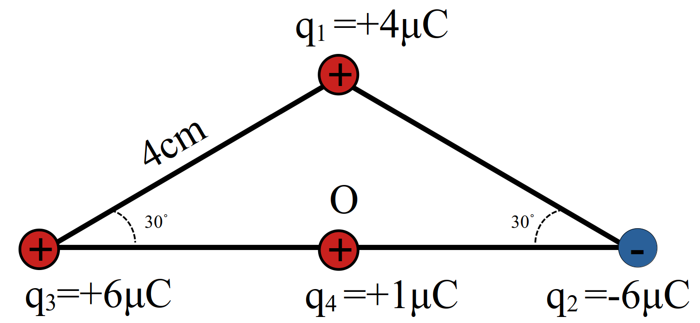
- \(45\)
- \(45\sqrt{2}\)
- \(90\)
- \(90\sqrt{2}\)
نمایش پاسخ
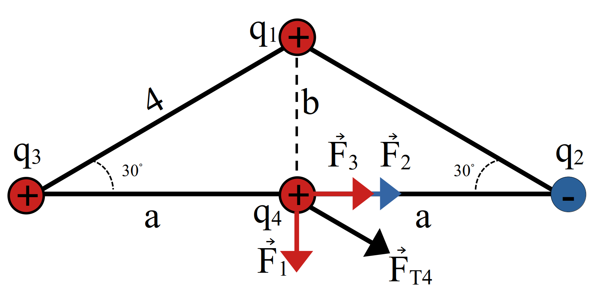
\[ \require{cancel} \begin{aligned} b & = \cancelto{2}{4} \cancelto{\frac{1}{\cancelto{1}{2}}}{sin30^{\circ}} = 2 \\ a & = \cancelto{2}{4} \cancelto{\frac{\sqrt{3}}{\cancelto{1}{2}}}{cos30^{\circ}} = 2\sqrt{3} \\ F_{1} & = 90 \frac{\cancel{4} \times 1 }{\cancelto{\cancel{4}}{2^2}} = 90 \\ F_{2} & = F_{3} = \cancelto{45}{90} \frac{\cancel{6} \times 1 }{\cancelto{\cancel{12}}{(2 \sqrt{3})^2}} = 45 \\ \vec{F}_{T4} & = \vec{F}_1 + \vec{F}_2 + \vec{F}_3 \\ & = 90 \vec{j}+ 90 \vec{j} \\ F & = 90 \sqrt{2} \simeq 127 \end{aligned} \]مثال 1.32 در شکل بالا نیروی وارد بر \(q_2\) چند نیوتن است؟
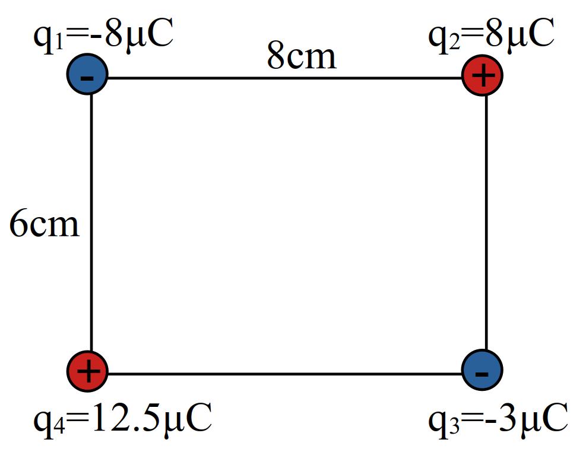
- \(20\)
- \(60\)
- \(6\sqrt{10}\)
- \(9\sqrt{10}\)
نمایش پاسخ
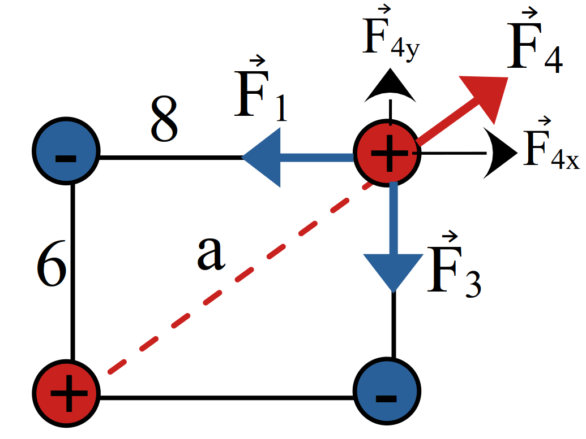
\[ \require{cancel} \begin{aligned} a & = \sqrt{\cancelto{36}{6^2}+\cancelto{64}{8^2}} = 10 \\ F_{1} & = 90 \frac{\cancel{8 \times 8}}{\cancel{64}} = 90 \\ F_{3} & = \cancel{90} \frac{3 \times \cancelto{2}{8} }{\cancelto{\cancel{36}}{(6)^2}} = 60 \\ F_{2} & = \cancel{90} \frac{\cancelto{\cancel{100}}{12.5 \times 8} }{\cancelto{\cancel{100}}{(10)^2}} = 90 \\ F_{2x} & = F_2 \cos{\theta} = 90 \times \frac{8}{10} = 72 \\ F_{2y} & = F_2 \sin{\theta} = 90 \times \frac{6}{10} = 54 \\ F_{T2} & = \cancelto{18}{(90 - 72)} \vec{i} + \cancelto{6}{(60 - 54)} \vec{j} \\ F_{T2} & = \sqrt{6^2 + 18^2} = 6 \sqrt{1 + 9} \\ & = \boxed{6 \sqrt{10} \simeq 19} \end{aligned} \]مثال 1.33 در شکل بالا نیروی وارد بر \(q_3\) برابر \(8.1\) نیوتن است. مقدار \(q_3\) کدام است؟
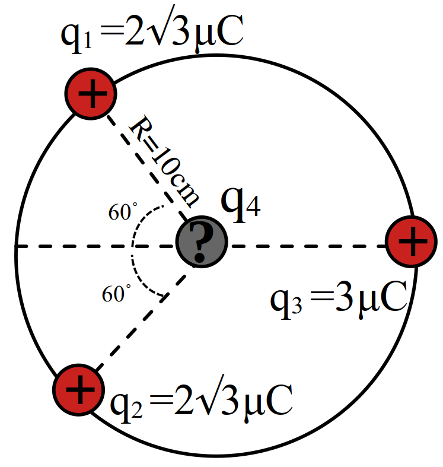
- \(1\)
- \(2\)
- \(20\)
- \(10\)
نمایش پاسخ
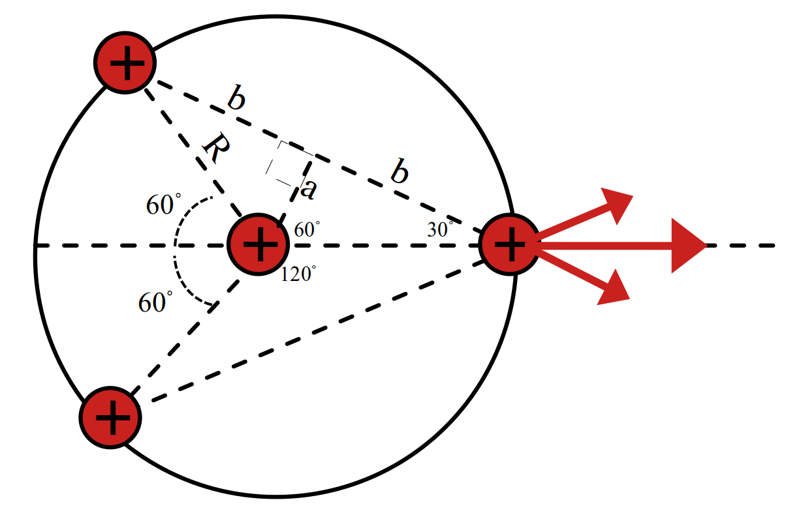
\[ \require{cancel} \begin{aligned} a & = 10 sin{30^\circ} = 10 \times \frac{1}{2} = 5 \\ b & = 10 cos{30^\circ} = 10 \times \frac{\sqrt{3}}{2} = 5 \sqrt{3} \\ F_{1} = F_{2} & = 9\cancel{0} \frac{2 \sqrt{3} \times \cancel{3} }{\cancelto{\cancelto{10}{300}}{(2 \times 5 \sqrt{3})^2}} = 1.8\sqrt{3} \\ F_{T12} & = 2 F_1 cos{\frac{\theta}{2}} = 2 \times 1.8 \sqrt{3} \times \frac{\sqrt{3}}{2} = 5.4 \\ F_{T3} & = F_{T12} + F_4 \\ 8.1 & = 5.4 + F_4 \\ \cancel{2.7} & = \cancel{90} \frac{\cancel{3} \times q_4 }{\cancelto{\cancel{100}}{(10)^2}} \\ q_4 & = \boxed{1} \end{aligned} \]مثال 1.34 مطابق شکل جرم هر گلوله \(m\) و طول نخها برابر است اگر بار هر گلوله \(q\) باشد نسبت بزرگی نیروی کششی هر نخ به وزن هر گلوله چیست؟ \((\sin{53^\circ} = 0.8)\)
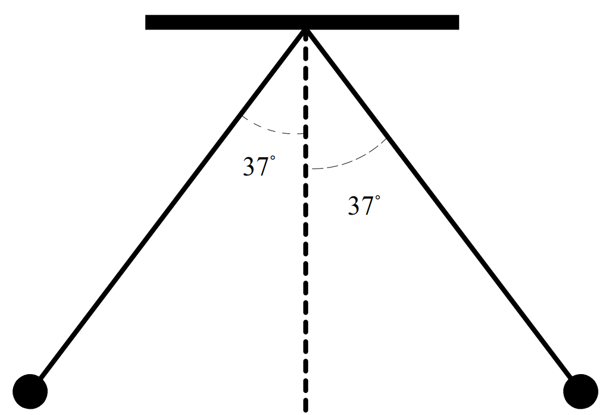
- \(\cfrac{5}{3}\)
- \(\cfrac{5}{4}\)
- \(\cfrac{4}{5}\)
- \(\cfrac{3}{5}\)
نمایش پاسخ
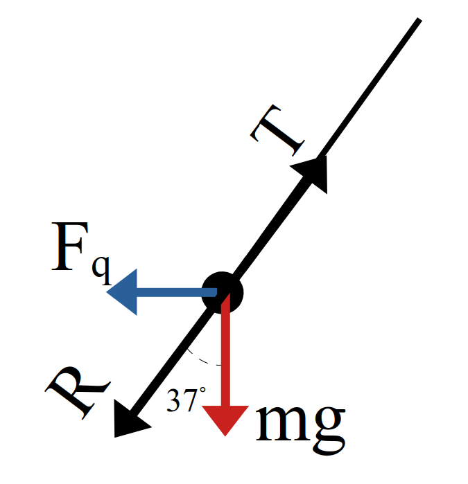
\[ \require{cancel} \begin{aligned} \sin{53^\circ} & = \cos{37^\circ} \\ \cancelto{\frac{8}{10} = \frac{4}{5}}{0.8} & = \cfrac{mg}{\cancelto{T}{R}} \\ \frac{T}{mg} & = \frac{5}{4} \end{aligned} \]مثال 1.35 سه بار الکتریکی روی راسهای یک مثلث واقع شدهاند. برآیند نیروهای وارد بر \(q_3\) چند درجه با محور \(x\) میسازد؟ \((\sin{53^\circ} = 0.8)\)
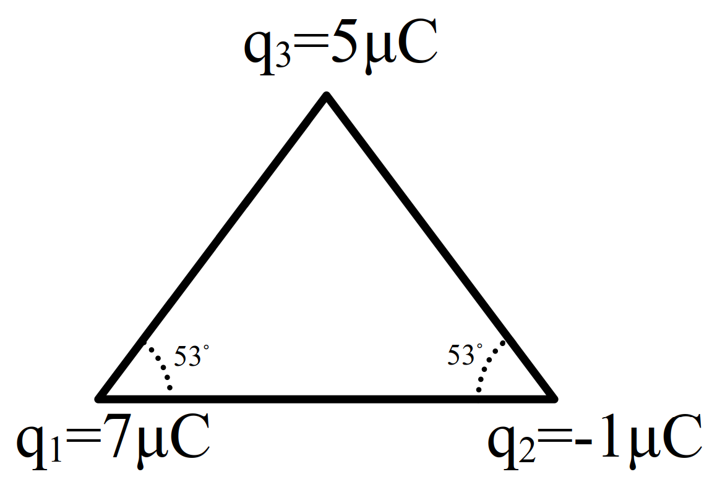
- صفر
- \(37\)
- \(45\)
- \(53\)
نمایش پاسخ
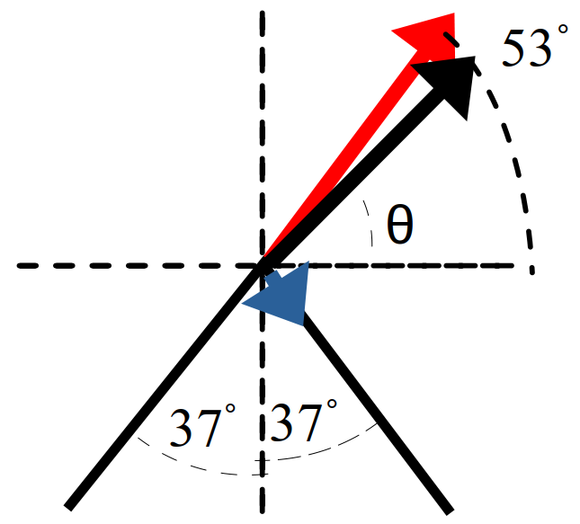
\[ \require{cancel} \begin{aligned} r & = 3\sqrt{10} cm\\ F & = k \frac{q_1q_2}{r^2} \\ F_1 & = 35 \\ F_{1x} & = 35 \cancelto{\frac{3}{5}}{\cos{53^\circ}} = 21 \\ F_{1y} & = 35 \cancelto{\frac{4}{5}}{\sin{53^\circ}} = 28 \\ \vec{F_1} & = 21 \vec{i} + 28 \vec{j}\\ F_2 & = 5 \\ F_{2x} & = 5 \cancelto{\frac{3}{5}}{\cos{53^\circ}} = 3 \\ F_{2y} & = 5 \cancelto{\frac{4}{5}}{\sin{53^\circ}} = 4 \\ \vec{F_2} & = 3 \vec{i} - 4 \vec{j}\\ F_{Tx} & = F_{1x} + F_{2x} = 21 + 3 = 24 \\ F_{Ty} & = F_{1y} + F_{2y} = 28 - 4 = 24 \\ \vec{F_T} & = 24 \vec{i} + 24 \vec{j}\\ \tan{\theta} & = \frac{F_{Ty}}{Tx} = \frac{24}{24} = 1 \\ \theta & = 45^\circ \end{aligned} \]1.9.2 میدان
مثال 1.36 در شکل مقابل برآیند میدان در نقطه \(C\) صفر است. نسبت \(\frac{q_2}{q_1}\) چیست؟
\[ \underset{A}{\overset{q_1}{{\LARGE\bullet}}} \underset{60cm}{-----} \underset{B}{\overset{q_2}{{\LARGE\bullet}}} \underset{20cm}{---}\underset{C}{{\LARGE.}} \]
- \(-\cfrac{1}{16}\)
- \(-\cfrac{1}{4}\)
- \(\cfrac{1}{3}\)
- \(\cfrac{1}{2}\)
نمایش پاسخ
\[ \underset{A}{\overset{q_1}{{\LARGE\bullet}}} ----- \underset{B}{\overset{q_2}{{\LARGE\bullet}}} --\leftarrow\underset{C}{{\LARGE.}}\rightarrow \]
\[ \require{cancel} \begin{aligned} 0 & = E_1 - E_2 \\ E_{1} & = E_{2} \\ \cancel{k} \cfrac{|q_1|}{r_1^2} & = \cancel{k} \cfrac{|q_2|}{r_2^2} \\ \cfrac{|q_2|}{|q_1|} & = \cfrac{r_2^2}{r_1^2} = \cfrac{4}{64} = \cfrac{1}{16} \\ \cfrac{q_2}{q_1} & = - \cfrac{1}{16} \end{aligned} \]مثال 1.37 اگر در راس مربع مقابل بار \(q\) قرار گیرد میدان در مرکز مربع \(E\) میشود. باتوجه به شکل برآیند میدان در مرکز مربع چند \(E\) میشود.
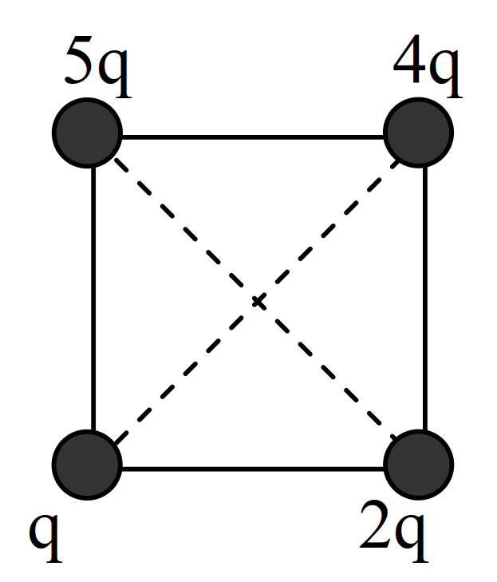
- \(\sqrt{2}\)
- \(2\sqrt{2}\)
- \(\frac{3}{2}\sqrt{2}\)
- \(3\sqrt{2}\)
نمایش پاسخ
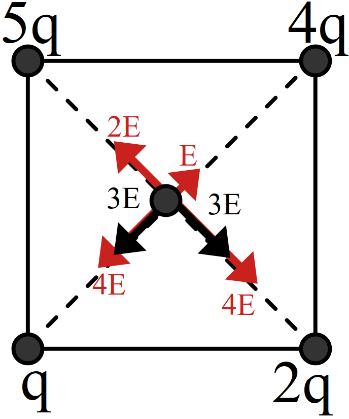
\[ \require{cancel} \begin{aligned} E_T & = \sqrt{2}\times3E \\ \cfrac{E_T}{E} & = 3 \sqrt{2} \end{aligned} \]مثال 1.38 در شکل مقابل \(q_1=q_2=-2\) میباشد \(q_3\) کدام باشد (برحسب میکروکولن) تا برآیند میدان در مرکز دایره صفر شود؟
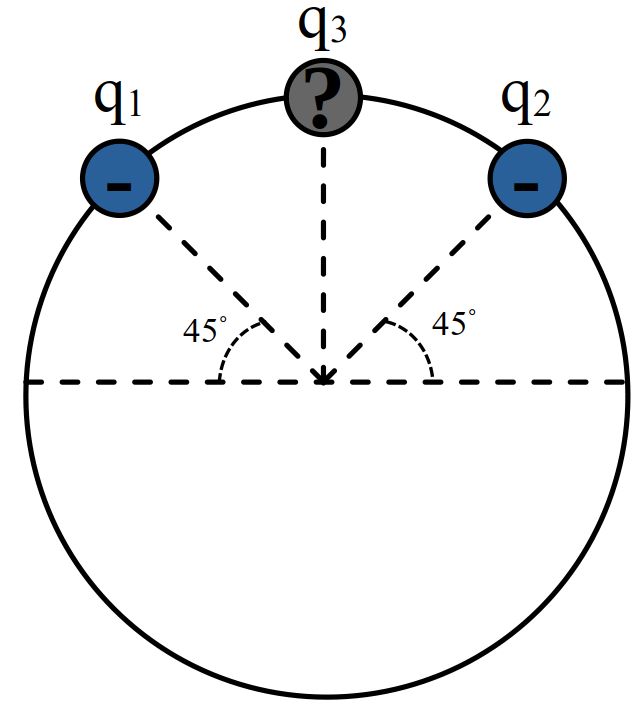
- \(-\sqrt{2}\)
- \(2\)
- \(-2\)
- \(2\sqrt{2}\)
نمایش پاسخ
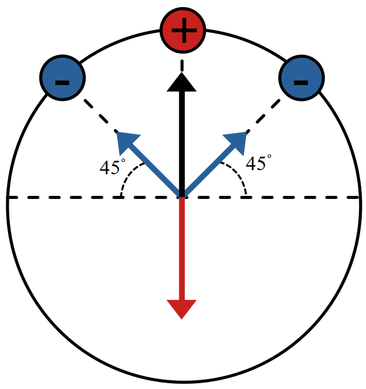
\[ \require{cancel} \begin{aligned} E_3 & = E_{T12} = \sqrt{2} \times E_1\\ \cancel{k} \frac{q_3}{\cancel{r^2}} & = \sqrt{2} \cancel{k} \frac{2}{\cancel{r^2}} \\ q_3 & = 2 \sqrt{2} \end{aligned} \]مثال 1.39 درشکل مقابل جرم گلوله آونگ \(4g\) است. و طول نخ متصل به آن \(35cm\) است. اگر به گلوله بار \(q\) داده و درون میدان یکنواخت \(2 \times 10^{4} \frac{N}{C}\) قرار گیرد. درون میدان منحرف شده و راستای نرخ از خط قائم \(\theta\) درجه میشود. بار گلوله چند میکروکولن است؟ \((10^{5} \frac{N}{kg})\)
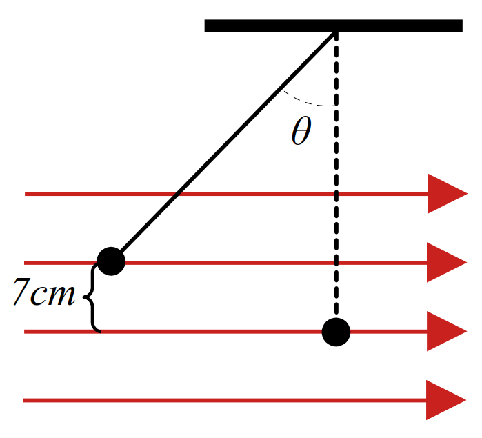
- \(-1.5\)
- \(-1.2\)
- \(0.15\)
- \(0.12\)
نمایش پاسخ
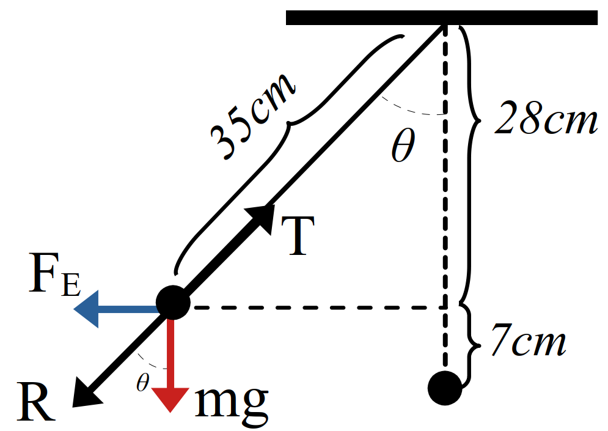
\[ \require{cancel} \begin{aligned} \cos{\theta} & = \frac{28}{35} = \frac{4}{5} \\ \sin{\theta} & = \sqrt{\cancelto{\frac{9}{25}}{1 - \cancelto{\frac{16}{25}}{\cos^2{\theta}}}} = \frac{3}{5} \\ \cancelto{\frac{\sin{\theta}}{\cos{\theta}}}{\tan{\theta}} & = \frac{\cancelto{|q|E}{F_E}}{mg} \\ \frac{3}{4} & = \frac{|q| \times 2 \times 10^{4}}{4\times 10^{-3} \times 10} \\ |q| & = \cancelto{1.5}{\frac{3}{2}} \times 10^{-6} C \\ q & = \boxed{- 1.5} \mu C \end{aligned} \]مثال 1.40 در شکل مقابل بار \(q_1,q_2\) را چند سانتی متر جابجا کنیم تا میدان حاصل از بارها در نقطه \(O\) صفر شود.
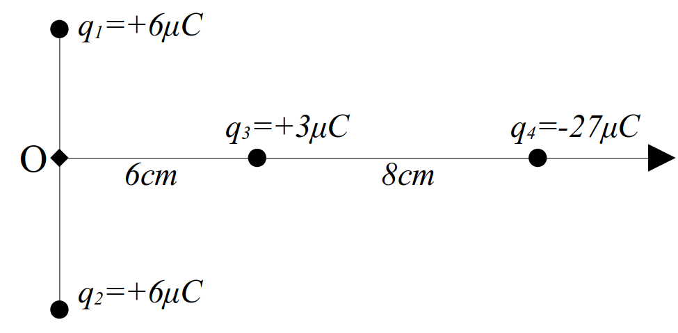
- \(4cm\) به راست
- \(4cm\) به چپ
- \(10cm\) به راست
- \(10cm\) به چپ
نمایش پاسخ
\[ \underset{\LARGE \underset{E_1}{\downarrow}}{ \overset{\LARGE\overset{E_2}{\uparrow}}{ E_3 \leftarrow o \rightarrow E_4 }} \]
\[ \require{cancel} \begin{aligned} E_1 & = E_2 \\ E_3 & = E_4 \\ \cancel{k} \frac{\cancelto{\cancel{3}}{q_3}}{\cancelto{36}{r_3^2}} & = \cancel{k} \frac{\cancelto{\cancelto{9}{27}}{q_4}}{\cancelto{(8 + x)^2}{r_4^2}} \\ (8 + x)^2 & = 9 \times 36 \\ 8 + x & = 3 \times 6 = 18\\ x & = \boxed{10cm}\\ \end{aligned} \]1.9.3 انرژی پتانسیل
مثال 1.41 در شکل مقابل انداره میدان \(10 \frac{N}{C}\) و بار الکتریکی \(-5 \mu C\) است. اگر در نقطه \(B\) رها شود در نقطه \(A\) انرژی جنبشی آن چند ژول میشود؟
\[ \overset{\vec{E}}{ \underrightarrow{ \overrightarrow{ \underrightarrow{ \overrightarrow{ A \bullet \overset{\quad d_{AB} = 20cm \quad}{------} \bullet B \quad }}}}} \]
- \(0.1\)
- \(0.5\)
- \(0.01\)
- \(0.05\)
نمایش پاسخ
\[ |+| \overset{E}{ \underrightarrow{\overrightarrow{ A \bullet ---- \underset{\overleftarrow{\vec{F}}}{\overset{\underleftarrow{\vec{d}}}{-}} \bullet B }}} |-| \]
\[ \require{cancel} \begin{aligned} \Delta U_E & = - |q|Ed \cos{\theta} \\ & = - 10^{5} \times 5 \times 10^{-6} \times 0.2 \times 1 \\ & = 12 \times 0.48 \times 10^{-1} J \\ & = -1 \times 10^{-1} J \\ \Delta K & = + 1 \times 10^{-1} J \\ & = K_A - \cancelto{0}{K_B} \\ K_A & = + 0.1 J \end{aligned} \]مثال 1.42 بار \(\frac{m}{s}\) در میدان یکنواخت \(4 \times \times 10^{5} \frac{N}{C}\) مطابق شکل از \(A\) تا \(B\) جابجا میشود. اگر جرم آن \(0.4g\) باشد و تندی آن در \(A\) برابر \(100\frac{m}{s}\) در راستای نشان داده شده باشد تندی آن در \(B\) تقریبا چند \(\frac{m}{s}\) است.
\[ \underset{\Large|+|}{ \overset{\Large|+|}{ \underset{\Large|+|}{ \overset{\Large|+|}{ \scriptsize|+|}}}} \overset{E }{ \underrightarrow{ \overrightarrow{ \quad \overset{.}{\overset{.}{\underset{\bullet}{\underset{A}{.}}}} \underset{60^\circ}{\overset{8m}{\swarrow}} \underset{.}{\underset{.}{\overset{\bullet}{\overset{B}{\;}}}} \quad }}} \underset{\Large|-|}{ \overset{\Large|-|}{ \underset{\Large|-|}{ \overset{\Large|-|}{ \scriptsize|-|}}}} \]
- \(400\)
- \(300\)
- \(160\)
- \(4\)
نمایش پاسخ
\[ \require{cancel} \begin{aligned} \Delta U_E & = - |q|Ed \cos{\theta} \\ & = - 4 \times 10^{5} \times 10 \times 10^{-6} \times 8 \times \cancelto{0.5}{\cos{60^{\circ}}} \\ & = - 16 J \\ \Delta K & = - \Delta U = +16 J \\ \cancelto{8}{16} & = \frac{1}{\cancel{2}} \cancelto{\cancel{4} \times 10^{-4}}{m} \times (v_2^2 - \cancelto{10000}{v_1^2}) \\ 8 \times 10^{4} & = v_2^2 - 10^{4} \\ v_2^2 & = 9 \times 10^{4} \\ v_2 & = 300 \frac{m}{s} \end{aligned} \]1.9.4 پتانسیل
مثال 1.43 در یک میدان الکتریکی بار \(-2\mu C\) از نقطه \(A\) تا \(B\) جابجا میشود. اگر انرژی پتانسیل الکتریکی آن در نقطههای \(A\) و \(B\) به ترتیب \(0.4mj\) و \(0.6mj\) باشد و پتانسیل نقطهی \(A\) برابر \(20V\) باشد پتانسیل نقطه \(B\) چند ولت است؟
- \(80\)
- \(800\)
- \(-120\)
- \(120\)
نمایش پاسخ
\[ \require{cancel} \begin{aligned} \Delta V & = \frac{\Delta U}{q} \\ V_B - V_A & = \frac{U_B - U_A}{q} \\ V_B - 20 & = \cancelto{100}{\frac{\cancelto{10^{-1}}{(0.6 - 0.4)}\times10^{-3} }{-\cancel{2} \times 10^{-6}}} \\ V_B & = 120 V \end{aligned} \]مثال 1.44 پتانسیل نقطه \(A\) برابر \(+600\) ولت است و وقتی بار \(-5 \mu C\) از \(A\) به \(B\) برده میشود. کار میدان الکتریکی روی آن \(-2mj\) میشود. پتانسیل نقطه \(B\) چند ولت است؟
- \(1000\)
- \(200\)
- \(800\)
- \(400\)